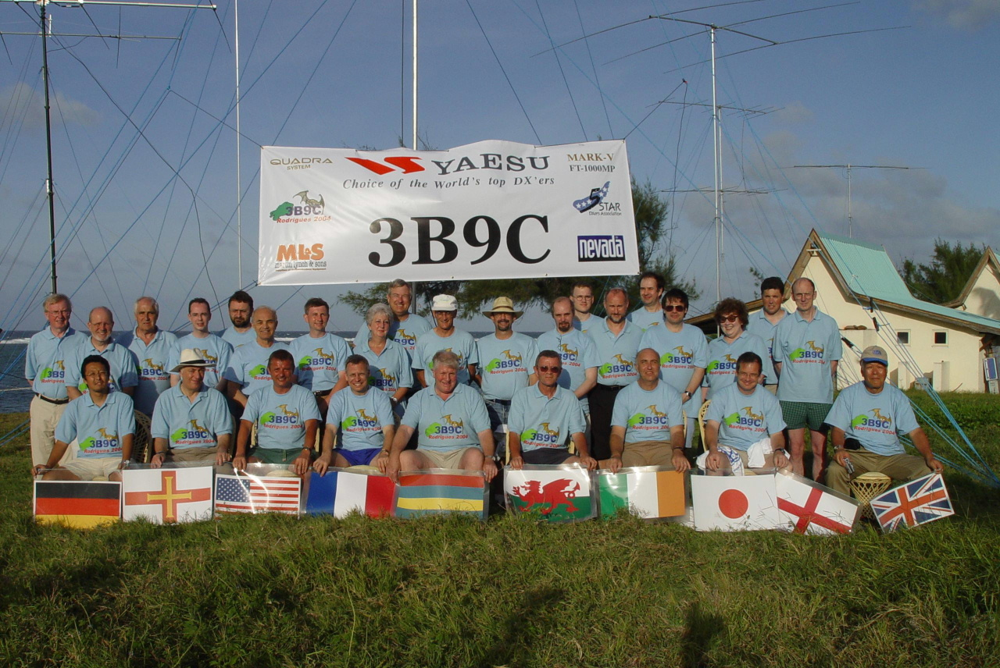

Flash ! DX


|
|
|
|
|
|
|
[Back Issues Apr.2015]
TIME:UTC(JST-09:00)
Report from JA1RJU(PM95sq)
30.Apr.2015(15:00f)
VK4BLK 05:30 50.276-0.355 WSJT JT65a CQ -01dB
VK4BLK 05:52 50.276-0.361 WSJT JT65a CQ -05dB
VK4WTN 06:01 50.276+0.495 WSJT JT65a -06dB
VK5PO 06:05 50.276+0.528 WSJT JT65a CQ -11dB
VK4FNQ 06:15 50.276-0.011 WSJT JT65a CQ -05dB
VK4RTL/b 06:15- 50.282 CW Beacon
ZL2WHO/B 06:20- 50.024 CW Beacon RST579
VK9NT 06:25 50.110 CW @ RST579-QSB
VK9NT 06:30 50.115 CW/SSB CQ CQ
HL2IFR 06:49 50.115 CW
ZL4AX 06:51 50.110 CW CQ
VK6KXW 06:53 50.110 CW CQ QRM
VK4WTN 06:53 50.104 CW CQ
VK4NE 07:09 50.276-0.030 WSJT JT65a CQ -08dB
VK4HJ 07:14 50.110 SSB CQ
VK6RSX/b 07:14- 50.304 CW Beacon
VK4KSY 07:15 50.276+0.121 WSJT JT65a -10dB
V73SIX/B 07:24- 50.0116 CW Beacon RST579
VK4ZJB 07:35 50.110 SSB/CW CQ QRM
VK4WDM 07:35 50.110 SSB CQ
VK6DVR 07:39 50.276-0.505 WSJT JT65a -05dB
VK6OX 07:49 50.276+0.401 WSJT JT65a CQ -06dB
V73SIX/B 07:55- 50.0116 CW Beacon
FK8SIX/b 07:55- 50.080 CW Beacon
(A52LSS 08:37 50.089 CW CQ into PL24)
(A52LSS 08:48 50.110 CW CQ into PL24)
T88DF 08:55 50.150 SSB RS59+
T88DF 09:06 50.150 SSB @ (QSL via JH2DFJ)
(A47B/B 10:10 50.009 CW Beacon into JA6)
VK8VF/b 14:55- 50.310 CW Beacon
Report from JA1RJU(PM95sq)
29.Apr.2015(15:00f)
VK4QG 05:35 50.276-0.242 WSJT JT65a -07dB
VK4KAY 05:47 50.276-0.035 WSJT JT65a -05dB
VK4EM 05:48 50.276-0.441 WSJT JT65a CQ -04dB
VK9NL 05:56 50.115 CW
VK4KEE 06:00 50.276+0.363 WSJT JT65a CQ -04dB
VK4FNQ 06:14 50.276-0.347 WSJT JT65a CQ -05dB
VK6DVR 06:37 50.276-0.293 WSJT JT65a CQ -12dB
VK6KXW 06:50 50.096 RTTY CQ
VK6OX 07:00 50.276+0.355 WSJT JT65a
VK4NE 07:01 50.276+0.016 WSJT JT65a CQ -03dB
VK4QG 07:11 50.276-0.471 WSJT JT65a CQ -06dB
VK4KSY 07:22 50.276+0.105 WSJT JT65a CQ -06dB
VK4RTL/b 07:35- 50.282 CW Beacon
VK4RSC/b 07:35- 50.284 CW Beacon
VK6RSX/b 07:35- 50.304 CW Beacon
FK8SIX/b 07:38- 50.080 CW Beacon
VK4FNQ 06:14 50.276-0.347 WSJT JT65a CQ -05dB
VK4KSY 08:16 50.276+0.127 WSJT JT65a -09dB
VK5PO 08:20 50.276-0.221 WSJT JT65a CQ -09dB
T88DF 08:25 50.150 SSB RS59+ (QSL via JH2DFJ)
KG6DX 08:40 50.103 CW
VK4WTN 08:42 50.105 CW CQ
DU1EV/B 08:45- 50.008 CW Beacon
T88DF 09:25 50.150 SSB
N7ET/DU7 09:26 50.103 CW CQ
DU1/JA3FJE 09:40 50.185 SSB
Report from JA1RJU(PM95sq)
28.Apr.2015(15:00f)
VK4KSY 06:24 50.276+0.121 WSJT JT65a CQ -07dB
VK4QG 06:36 50.276-0.275 WSJT JT65a CQ -05dB
VK4FNQ 07:02 50.276-0.482 WSJT JT65a CQ -23dB
VK4NE 07:05 50.276-0.024 WSJT JT65a CQ -08dB
VK4KSY 07:20 50.276+0.124 WSJT JT65a CQ -14dB
VK4WTN 08:49 50.276-0.135 WSJT JT65a CQ -08dB
VK4NE 09:02 50.276-0.024 WSJT JT65a -11dB
VK4FNQ 09:04 50.276-0.409 WSJT JT65a CQ -05dB
FW5JJ 09:09 50.111 CW UP (QSL via F5RXL)
DU1EV/B 09:20- 50.008 CW Beacon
JG8NQJ/JD1 09:31 50.117.5 CW @ RST599/599 Minami Torishima
JG8NQJ/JD1 09:37 50.117.5 CW CQ UP (QSL via JA8CJY)
FW5JJ 09:54 50.120 SSB @ RS57/55
Report from JA1RJU(PM95sq)
27.Apr.2015(15:00f)
VK6RSX/b 05:30- 50.304 CW Beacon
VK5PO 06:05 50.276-0.221 WSJT JT65a CQ -06dB
VK4RTL/b 06:34- 50.282 CW Beacon
VK4TVL/b 06:34- 50.295 CW Beacon
VK6RSX/b 06:34- 50.304 CW Beacon
VK4FNQ 06:50 50.276-0.444 WSJT JT65a CQ -03dB
VK5PO 07:11 50.276-0.221 WSJT JT65a CQ -15dB
V73SIX/B 07:15- 50.0116 CW Beacon RST599
V73NS 07:15 50.104 CW CQ
VK4UH 07:44 50.276-0.035 WSJT JT65a CQ -11dB
DU1EV/B 08:20- 50.008 CW Beacon
Report from JA1RJU(PM95sq)
26.Apr.2015(15:00b)
DU1EV/B 09:20- 50.008 CW Beacon
Report from JA1RJU(PM95sq)
25.Apr.2015(15:00e)
AX4FNQ 06:58 50.276-0.559 WSJT @ JT65a -05dB/-07dB(20W)
VK4UH 07:04 50.276-0.011 WSJT JT65a CQ -20dB
VK4BLK 07:13 50.276-0.164 WSJT JT65a CQ -02dB
VK4RTL/b 07:25- 50.282 CW Beacon
VK4TVL/b 07:25- 50.295 CW Beacon
DU7/PA0HIP 09:48 50.105 CW CQ RST599
DU1EV/B 09:50- 50.008 CW Beacon
Report from JA1RJU(PM95sq)
24.Apr.2015(15:00h)
VK4RTL/b 05:45- 50.282 CW Beacon
VK4NE 05:46 50.276-0.024 WSJT JT65a -05dB
VK6DVR 06:04 50.276-0.005 WSJT JT65a -10dB
V73SIX/B 06:14- 50.0117 CW Beacon
FK8SIX/b 06:15- 50.080 CW Beacon FSK
VK4FNQ 06:17 50.276-0.490 WSJT JT65a -03dB
VK6OX 06:48 50.276-0.051 WSJT JT65a CQ -06dB
VK6DVR 06:56 50.276-0.388 WSJT JT65a CQ -07dB
VK5PO 07:20 50.276-0.205 WSJT JT65a -06dB
VK4NE 07:21 50.276-0.027 WSJT JT65a -04dB
(A47RB/b 07:47- 50.004 CW Beacon JA6)
VK5PO 08:16 50.276-0.223 WSJT JT65a CQ -07dB
VK4QG 08:17 50.276-0.269 WSJT JT65a CQ -03dB
VK6RPH/b 08:25- 50.066 CW Beacon
VK4RTL/b 08:25- 50.282 CW Beacon
VK4TVL/b 08:25- 50.295 CW Beacon
VK6RSX/b 08:25- 50.304 CW Beacon
VK6KXW 08:27 50.095 RTTY CQ RST599
VK4FNQ 09:06 50.276-0.447 WSJT JT65a CQ -07dB
(FR1GZ/b 10:24- 50.0385 CW Beacon JA5-6)
VK8VF/b 11:55- 50.310 CW Beacon
VK8MS 12:08 50.110 CW CQ
Report from JA1RJU(PM95sq)
23.Apr.2015(15:00h)
VK4AHW 06:25 50.135 SSB RS59+
V73SIX/B 06:25- 50.0117 CW Beacon
VK6DVR 06:29 50.276-0.008 WSJT JT65a -06dB
VK6OX 06:32 50.276+0.423 WSJT JT65a CQ -05dB
VK5PO 06:33 50.276-0.417 WSJT JT65a CQ -04dB
VK4RTL/b 06:48- 50.282 CW Beacon
VK4RSC/b 06:48- 50.284.7 CW Beacon
VK4QG 06:50 50.276-0.331 WSJT JT65a -06dB
FK8SIX/b 06:55- 50.080 CW Beacon FSK
VK4ZB 07:00 50.276+0.285 WSJT JT65a -08dB
VK4KSY 07:01 50.276- WSJT JT65a CQ QRM
VK4NE 07:07 50.276+0.029 WSJT JT65a -06dB
VK4RSC/b 07:25- 50.284.7 CW Beacon
VK6RSX/b 07:25- 50.304 CW Beacon
VK6KXW 07:53 50.095 RTTY @ RST599/599
VK4NE 07:57 50.276+0.030 WSJT JT65a -03dB
VK6OX 08:09 50.276-0.336 WSJT JT65a CQ -02dB
VK6DVR 08:11 50.276+0.110 WSJT JT65a CQ -05dB
VK4QG 08:32 50.276-0.051 WSJT JT65a CQ -07dB
VK4KSY 08:35 50.276+0.522 WSJT JT65a CQ -16dB
VK4KEE 08:38 50.276-0.191 WSJT JT65a CQ -04dB
VK6RO 08:54 50.110 SSB
VK6RPH/b 09:00- 50.066 CW Beacon
VK4RTL/b 09:00- 50.282 CW Beacon
VK4RSC/b 09:00- 50.284.7 CW Beacon
VK4TVL/b 09:00- 50.295 CW Beacon
VK6RSX/b 09:00- 50.304 CW Beacon
VK6RBU/b 09:00- 50.306 CW Beacon
VK4FNQ 09:22 50.276-0.479 WSJT JT65a -01dB
VK4WTN 09:29 50.276-0.141 WSJT JT65a -13dB
VK4TVL/b 12:28- 50.295 CW Beacon
VK6RSX/b 12:28- 50.304 CW Beacon
VK8VF/b 12:28- 50.310 CW Beacon
Report from JA1RJU(PM95sq)
22.Apr.2015(15:00f)
FK8CP 01:56 50.110 CW CQ
HL1LUA 04:26 50.108 CW CQ RST599
VK4BLK 04:26 50.276-0.514 WSJT JT65a CQ -05dB
VK6OX 05:29 50.276+0.240 WSJT JT65a CQ -22dB
VK4WTN 05:44 50.276+0.135 WSJT JT65a -08dB
V73SIX/B 05:47- 50.0117 CW Beacon
VK4QG 06:03 50.276-0.256 WSJT JT65a CQ -13dB
VK4WTN 06:24 50.276+0.210 WSJT JT65a -06dB
VK4BLK 06:31 50.276+0.213 WSJT JT65a -05dB
V73NS 06:32 50.104 CW RST599
VK4BLK 06:43 50.277.5 WSJT JT65a CQ -07dB
VK4RY 06:50 50.276-00 WSJT @ JT65a CQ -11dB/-11dB(20W)
VK4KSY 07:03 50.276+0.124 WSJT JT65a CQ -09dB
VK4NE 07:20 50.276+0.024 WSJT JT65a CQ -12dB
(3B9FR 07:25 50.105 CW JA2-6)
VK4UH 07:42 50.276+0.127 WSJT JT65a CQ -10dB
(3B8DB 07:54 50.115 CW JA6)
VK6OX 08:24 50.276-0.097 WSJT JT65a CQ -14dB
VK4RTL/b 08:53- 50.282 CW Beacon
VK4RSC/b 08:53- 50.284 CW Beacon
VK6RSX/b 08:53- 50.304 CW Beacon
VK4FNQ 09:19 50.276-0.517 WSJT JT65a CQ -05dB
(A47RB/b 09:23 50.004 CW Beacon JA6)
BG6CJR 13:25 50.110 CW CQ
Report from JA1RJU(PM95sq)
21.Apr.2015(15:00f)
VK4RY 07:15 50.276+0.024 WSJT JT65a CQ -09dB
VK4RTL/b 07:24- 50.282 CW Beacon
VK4RSC/b 07:24- 50.2845 CW Beacon
VK6OX 07:28 50.276+0.293 WSJT JT65a CQ -19dB
VK4KSY 07:31 50.276+0.307 WSJT JT65a CQ -04dB
VK4RY 07:34 50.276+0.013 WSJT JT65a CQ -07dB
VK4RY 07:36 50.276+0.003 WSJT @ JT65a CQ -03dB/-23dB(20W)
VK4NE 07:49 50.276+0.027 WSJT JT65a CQ -05dB
VK4KSY 08:01 50.276+0.106 WSJT JT65a CQ -12dB
V63DX 08:05 50.115 SSB
DU1EV/B 08:30- 50.008 CW Beacon
N7ET/DU7 08:34 50.106 CW
DU7/PA0HIP 08:36 50.110 CW
VK4WTN 08:42 50.104 CW
VK4FNQ 09:15 50.276-0.359 WSJT JT65a CQ -06dB
VK4WTN 09:24 50.276-0.482 WSJT JT65a -22dB
VK6RSX/b 12:23- 50.304 CW Beacon
VK8VF/b 12:23- 50.310 CW Beacon
Report from JA1RJU(PM95sq)
20.Apr.2015(15:00g)
V73SIX/B 03:28- 50.0117 CW Beacon
VK4QG 04:17 50.276-0.269 WSJT JT65a CQ -17dB
VK4KSY 04:57 50.276+0.118 WSJT JT65a CQ -11dB
VK4QG 05:29 50.276+0.196 WSJT JT65a CQ -06dB
VK4BLK 05:35 50.276+0.474 WSJT JT65a CQ -03dB
VK4BLK 05:43 50.276-0.161 WSJT JT65a CQ -05dB
VK4FNQ 06:41 50.276-0.495 WSJT JT65a CQ -08dB
VK4RTL/b 06:44- 50.282 CW Beacon
VK4TVL/b 06:44- 50.295 CW Beacon
V73SIX/B 06:44- 50.0117 CW Beacon
DU1EV/B 06:45- 50.008 CW Beacon RST599
VK4BLK 07:02 50.276-0.258 WSJT JT65a CQ -01dB
VK4KSY 07:17 50.276-0.117 WSJT JT65a CQ -12dB
VK4FNQ 07:19 50.276-0.458 WSJT JT65a CQ -05dB
3B9FR 07:58 50.105 CW CQ RST559 QSB
3B8DB 08:00 50.115 CW very weak
(FR1GZ 08:38 50.276- WSJT JT65a 1st.TX -16dB into JA5-6)
VK4FNQ 09:07 50.276-0.444 WSJT JT65a CQ -07dB
VK4WTN 09:24 50.276+0.606 WSJT JT65a CQ -07dB
VK4BLK 09:50 50.276-0.002 WSJT JT65a CQ -14dB
VK4GO 09:56 50.276-0.008 WSJT JT65a CQ -15dB
Report from JA1RJU(PM95sq)
19.Apr.2015(15:00e)
VK4FNQ 06:45 50.276-0.509 WSJT JT65a CQ -11dB
VK4RTL/b 06:55- 50.282 CW Beacon
VK4TVL/b 06:55- 50.295 CW Beacon
V73SIX/B 07:33- 50.0117 CW Beacon
3B9FR 07:55 50.105 CW very weak into JA1
V63DX 08:35 50.090 RTTY RST599 UP
3B9FR 08:40 50.105 CW QSO with JA2-3-6
(FR4NT 09:00 50.115 SSB weak QSO with JA3-)
9M2/JE1SCJ 09:03 50.123 CW CQ CQ RST599
DU1EV/B 09:05- 50.008 CW Beacon RST599
(3B8DB 09:21 50.115 CW JA3-JA6)
DU7/PA0HIP 09:27 50.115 CW Calling 3B8DB)
Report from JA1RJU(PM95sq)
18.Apr.2015(15:00g)
VK4CZ 02:50 50.276+0.030 WSJT JT65a CQ -04dB
VK3DUT 03:49 50.110 SSB
V63DX 03:50 50.120 RTTY CQ CQ
V63DX 03:55 50.090 RTTY @ RST599/599(QSL Direct to JA7HMZ)
VK4AMG 03:56 50.090 CW CQ
V73NS 03:59 50.106 CW CQ CQ
V73SIX/B 04:00- 50.0117 CW Beacon
VK4CH 04:27 50.110 SSB
VK4QG 04:38 50.276-0.298 WSJT JT65a CQ -05dB
VK3AUU 04:44 50.276+0.136 WSJT JT65a CQ -20dB
VK2BLS 05:10 50.276-0.140 WSJT JT65a CQ -09dB
ZL2DX 05:40 50.276-0.210 WSJT JT65a CQ -18dB
ZL2WHO 05:48 50.276-0.003 WSJT JT65a CQ -24dB
VK4UH 06:16 50.276-0.0.005 WSJT JT65a CQ -16dB
VK5PO 06:18 50.276-0.148 WSJT JT65a CQ -05dB
VK4FNQ 06:35 50.276+0.495 WSJT JT65a CQ -10dB
DU1EV/B 06:53- 50.008 CW Beacon
9M2/JE1SCJ 07:10 50.123 CW @ RST599/599
V63DX 07:40 50.105 CW RST599
(A43WARD 08:17 50.104 CW JA5.6)
XV4Y 08:50 50.1115 SSB @ QSB (100W+2EL)
(A43WARD 08:53 50.104 SSB JA6)
DU1/JA3FJE 09:15 50.190 SSB RS59+
VK6RSX/b 09:18- 50.304 CW Beacon
VK4WTN 09:21 50.102 CW CQ
VK6RO 09:27 50.276+0.423 WSJT JT65a CQ -05dB
VK4BLK 09:33 50.276-0.167 WSJT JT65a CQ -12dB
3B8DB 09:48 50.115 CW weak
Report from JA1RJU(PM95sq)
17.Apr.2015(15:00d)
VK4KSY 05:07 50.276+0.132 WSJT JT65a CQ -08dB
VK4RTL/b 05:08- 50.282 CW Beacon
VK4ESC/b 05:08- 50.284 CW Beacon
VK4EM 05:14 50.276+0.210 WSJT JT65a CQ -09dB
VK6DVR 05:15 50.276-0.180 WSJT JT65a CQ -06dB
VK4KSY 05:17 50.276+0.118 WSJT JT65a CQ -07dB
VK6DW 05:18 50.276+0.210 WSJT JT65a CQ -18dB
VK4QG 05:32 50.276-0.260 WSJT JT65a CQ -11dB
VK4EM 05:47 50.276+0.345 WSJT JT65a CQ -02dB
VK4EM 06:13 50.276+0.345 WSJT JT65a CQ -10dB
VK6IQ 06:21 50.276-0.048 WSJT JT65a CQ -09dB
VK4QG 07:07 50.276-0.070 WSJT JT65a CQ -23dB
KG6JDX 08:54 50.110 SSB RS59+
DU1EV/B 08:55- 50.008 CW Beacon
AH2G/B 09:00 50.0045 CW Beacon
FK8CP 09:24 50.110 CW CQ
Report from JA1RJU(PM95sq)
16.Apr.2015(15:00f)
VK6KXW 05:45 50.110 CW CQ
VK6RPH/b 05:47- 50.066 CW Beacon
VK6RSX/b 05:47- 50.304 CW Beacon
VK6DVR 05:53 50.276-0.125 WSJT JT65a -10dB
VK6DVR 07:12 50.276-0.108 WSJT JT65a CQ -04dB
VK6DVR 07:18 50.276-0.113 WSJT JT65a -07dB
(JA6YBR/b 08:20- 50.017 CW Beacon Miyazaki RST599)
3B9FR 09:13 50.105 CW @ CQ Robert
3B9FR 09:22 50.105 CW UP1 RST599
3B9FR 09:40 50.105 CW CQ UP1
3B9FR 10:30 50.105 CW CQ UP1 still good RST599
3B9FR 10:35 50.110 SSB @ RS57 QSY to SSB
3B9FR 10:40 50.112/110 SSB RS59 QSY to SSB
3B9FR 10:52 50.105 CW CQ Back to CW
3B9FR 11:50 50.105 CW Still CQ RST559
|
◎西日本では連日入感していたロドリゲズ島の3B9FRは、東日本（1エリア以北）ではほとんどオープンのチャンスに恵まれなかったが、
今日はようやく1エリアでも3B9FRの信号を長時間にわたり聞く事が出来た。
0910JST頃から入感してきた信号は、5分ほどで急上昇、50.105MHzはパイルとなったが、OPのRobertは1KHz-UPを指定してJA1のパイルを軽快に捌いていた。 入感しているエリアは1エリアが主だったためか、1KHz-UPの指定により、ほとんどの局は1コールでQSOを終えていた。 1時間半ほどでCWで呼ぶ局が少なくなり、SSBへのQSYのリクエストに答えてSSBへのアナウンスして50.110MHzのSSBにQSYしてくれたが、 アナウンスを聞きそこなった局が50.110MHzにQSYしたのに気づかず、50.110MHzのSSBのパイルはCWほどでは無く、SSBではオンフレでのQSOが続いた。 SSBで呼ぶ局が意外と少なかったため、10分ほどで再び50.105MHzのCWに戻った。オープンしていたエリアは圧倒的に1エリアが良かったためJA7、JA2の局から呼ぶ局への リポートは良くなかった。CWのQSOの好きな3B9FR・Robartには、やはりCWでの”捌き”が似合う。 1エリアで3B9FRが入感する1時間ほど前から、大陸方面のTV-BUZZと同時に50.017MHzのJA6YBR/b（Miyazaki）が強力に入感していた事から、九州に”落ちてきた”3B9FRの信号が、更にEsに乗って1ホップして、1エリアに到着してきたものと思われる。Esの信号がかなり上から到達していたため、”スタックアンテナ”を使用していた局はシングルの局に比べて信号も弱く飛びも悪かったものと思われる。 |
Report from JA1RJU(PM95sq)
15.Apr.2015(15:00d)
VK4AFL 05:45 50.110 SSB RS59
VK4RTL/b 05:45- 50.282 CW Beacon
VK6OX 05:48 50.276+0.304 WSJT JT65a -09dB
VK6IQ 05:50 50.276+0.043 WSJT JT65a -06dB
VK6DVR 05:54 50.276-0.105 WSJT JT65a -06dB
VK6IQ 06:14 50.276-0.038 WSJT @ JT65a -09dB/-06dB(10W)
VK4FNQ 06:21 50.276+0.315 WSJT JT65a CQ -09dB
V73SIX/B 06:25- 50.0117 CW Beacon
VK6APZ 06:26 50.125 SSB
VK4RTL/b 06:28- 50.282 CW Beacon
VK4TVL/b 06:28- 50.295 CW Beacon
VK6RSX/b 06:28- 50.304 CW Beacon
VK6DVR 06:30 50.276+0.367 WSJT JT65a -06dB
VK4FNQ 09:26 50.276+0.484 WSJT JT65a CQ -05dB
Report from JA1RJU(PM95sq)
14.Apr.2015(15:00f)
VK4QG 04:09 50.276-0.264 WSJT JT65a CQ -01dB
VK4RTL/b 04:10- 50.282 CW Beacon
VK4RSC/b 04:10- 50.285 CW Beacon
VK4TVL/b 04:10- 50.295 CW Beacon
VK4RGG/b 04:10- 50.0578 CW Beacon
VK4RO 04:18 50.102 CW RST599
VK4QG 04:28 50.276-0.210 WSJT JT65a -05dB
VK4KSY 04:28 50.276-0.336 WSJT JT65a -09dB QRM
VK6RSX/b 06:20- 50.304 CW Beacon
VK4QG 06:25 50.276-0.226 WSJT JT65a -04dB
VK3ZAZ 07:30 50.276-0.059 WSJT JT65a (QSO with JA2)
VK4KSY 07:57 50.276-0.129 WSJT JT65a -05dB
VK4WTN 08:28 50.276-0.517 WSJT JT65a -08dB
VK4FNQ 09:11 50.276-0.455 WSJT JT65a CQ -07dB
VK4CZ 09:14 50.276-0.032 WSJT JT65a CQ -08dB
VK4CZ 09:30 50.276-0.027 WSJT @ JT65a -07dB/-11dB(10W)
Report from JA1RJU(PM95sq)
13.Apr.2015(15:00f)
VK4QG 03:54 50.276-0.275 WSJT JT65a CQ -21dB
VK4WTN 03:57 50.276+0.619 WSJT JT65a CQ -05dB
VK4QG 04:07 50.276-0.272 WSJT JT65a CQ -05dB
VK4CZ 04:10 50.276-0.027 WSJT JT65a CQ -04dB
VK4QG 04:45 50.276-0.266 WSJT JT65a CQ -08dB
VK4BLK 05:17 50.276+0.200 WSJT JT65a CQ -08dB
VK4EK 05:20 50.276+0.003 WSJT JT65a CQ -07dB
VK4BLK 05:29 50.276-0.172 WSJT JT65a CQ -04dB
VK4EK 05:30 50.276-0.003 WSJT JT65a CQ -08dB
VK4GO 05:42 50.276+0.067 WSJT JT65a CQ -08dB
VK4RTL/b 05:58- 50.282 CW Beacon
VK4TVL/b 05:58- 50.295 CW Beacon
V73SIX/B 06:00- 50.0117 CW Beacon
VK4FNQ 06:11 50.276-0.482 WSJT JT65a CQ -07dB
VK4FNQ 06:36 50.276-0.519 WSJT JT65a CQ -07dB
VK4BLK 06:40 50.276-0.175 WSJT JT65a CQ -16dB
VK6RO 06:46 50.110 CW CQ
VK6KXW 06:49 50.110 CW CQ
VK4WTN 09:03 50.110 CW CQ
9W6EZ 09:04 50.113 SSB CQ
DU1EV/B 09:05- 50.008 CW Beacon
VK4WTN 09:12 50.105 CW CQ
Report from JA1RJU(PM95sq)
12.Apr.2015(15:00e)
ZL2WHO/B 03:14- 50.024 CW Beacon
VK4RTL/b 03:14- 50.282 CW Beacon
VK4TVL/b 03:14- 50.295 CW Beacon
ZL4AX 03:18 50.110 CW
VK3ZAZ 04:32 50.276-0.616 WSJT JT65a CQ -18dB
VK2BLS 04:41 50.276+0.312 WSJT JT65a CQ -12dB
VK3ZAZ 04:55 50.276+0.619 WSJT JT65a CQ -15dB
V73SIX/b 04:55- 50.0117 CW Beacon
VK4WTN 05:01 50.276-0.156 WSJT JT65a CQ -21dB
VK4GO 05:24 50.276-0.356 WSJT JT65a CQ -04dB
VK4GO 05:48 50.276-0.000 WSJT @ JT65a -09dB/-21dB(10W)
VK4BLK 06:41 50.276-0.167 WSJT JT65a CQ -09dB
VK4FNQ 06:44 50.276-0.525 WSJT JT65a CQ -16dB
VK5PO 06:59 50.276-0.110 WSJT JT65a QSO with JA5
DU7/PA0HIP 08:42 50.105 CW CQ
DU1EV/B 08:43- 50.008 CW Beacon
Report from JA1RJU(PM95sq)
11.Apr.2015(15:00e)
VK4CZ 03:40 50.276-0.030 WSJT JT65a CQ -17dB
VK4CZ 03:44 50.276-0.030 WSJT @ JT65a -17dB/-18dB(10W)
VK7XX 04:00 50.276-0.040 WSJT JT65a CQ -14dB
VK7XX 04:05 50.276-0.000 WSJT @ JT65a -14dB/-16dB(10W)
VK3ZAZ 04:11 50.276-0.117 WSJT JT65a
VK3FZ 04:19 50.276+0.466 WSJT JT65a -06dB
VK7XX 04:22 50.276-0.000 WSJT JT65a CQ -12dB
VK3ZAZ 05:01 50.276-0.040 WSJT JT65a CQ -12dB
VK2BLS 05:16 50.276+0.221 WSJT JT65a -07dB
VK3ZAZ 05:01 50.276-0.040 WSJT JT65a CQ -14dB
VK3MEG 05:24 50.276+0.213 WSJT JT65a CQ -09dB
VK3AUU 05:26 50.276-0.261 WSJT JT65a CQ -04dB
VK2XN 05:29 50.276+0.202 WSJT JT65a CQ -22dB
VK2ZQ 05:38 50.276+0.213 WSJT JT65a CQ -09dB
VK2XN 06:03 50.276-0.161 WSJT JT65a CQ -16dB
VK4BLK 06:19 50.276-0.167 WSJT JT65a CQ -07dB
VK4FNQ 06:23 50.276+0.156 WSJT JT65a CQ -05dB
VK4RTL/b 06:26- 50.282 CW Beacon
VK4OH 06:30 50.140 SSB RS59
VK4BLK 06:53 50.276-0.075 WSJT JT65a CQ -07dB
VK4RTL/b 08:45- 50.282 CW Beacon
Report from JA1RJU(PM95sq)
10.Apr.2015(15:00c)
VK7XX 05:42 50.276+0.161 WSJT JT65a CQ -17dB
VK4FNQ 06:12 50.276-0.476 WSJT JT65a CQ -05dB
VK7XX 06:16 50.276+0.159 WSJT JT65a CQ -05dB
VK6KXW 06:33 50.276+0.304 WSJT JT65a -07dB
VK4FNQ 06:48 50.275+0.204 WSJT JT65a CQ -06dB
VK6RSX/b 08:20- 50.304 CW Beacon
Report from JA1RJU(PM95sq)
09.Apr.2015(15:00f)
VK4EK 04:34 50.276+0.522 WSJT JT65a CQ -08dB
VK4BLK 04:42 50.276-01648 WSJT JT65a CQ -04dB
VK5PO 04:47 50.276-0.201 WSJT JT65a CQ -05dB
VK5PO 05:24 50.276-0.019 WSJT JT65a CQ -05dB
VK4RTL/b 05:26- 50.282 CW Beacon
VK5PO 05:29 50.110 CW CQ
VK6RO 05:40 50.110 CW CQ
VK6DVR 05:55 50.276-0221 WSJT JT65a CQ -04dB
VK6DVR 05:57 50.276-0.00 WSJT @ JT65a -06dB/-01dB(20W)
VK4FNQ 06:05 50.276+0.318 WSJT JT65a CQ -06dB
VK6RSX/b 06:15- 50.304 CW Beacon
VK5PO 06:32 50.276-0.024 WSJT JT65a CQ -05dB
VK5XDX 08:14 50.105 CW CQ DX
DS5USH 08:46 50.107 CW CQ
VK2IUW 08:50 50.105 CW CQ
VK6KXW 08:57 50.106 CW CQ
VK5XDX 08:58 50.106 CW CQ DX
Report from JA1RJU(PM95sq)
08.Apr.2015(15:00f)
VK5PO 05:32 50.276-0.218 WSJT JT65a CQ -10dB
VK4KEE 05:35 50.276+0.277 WSJT JT65a CQ -05dB
VK4KSY 05:50 50.276-0.231 WSJT JT65a CQ -19dB
VK4FNQ 06:09 50.276+0.030 WSJT JT65a CQ -06dB
VK4FNQ 06:45 50.276+0.226 WSJT JT65a CQ -04dB
DU7/PA0HIP 12:14 50.105 CW CQ
VK6RSX/b 12:15- 50.304 CW Beacon
VK8VF/b 12:15- 50.310 CW Beacon
DU1EV/B 12:20- 50.008 CW Beacon
Report from JA1RJU(PM95sq)
07.Apr.2015(15:00e)
VK4KAY 04:54 50.276+0.035 WSJT JT65a CQ -13dB
VK4CZ 04:58 50.276-0.032 WSJT JT65a CQ -07dB
VK4CZ 05:02 50.276-0.035 WSJT @ JT65a -07dB/-12dB(20W)
VK5PO 06:06 50.276-0.280 WSJT JT65a CQ -09dB
VK4FNQ 06:07 50.276+0.509 WSJT JT65a CQ -07dB
VK4WDM 06:36 50.110 SSB CQ DX
VK6IQ 07:38 50.276-0.038 WSJT JT65a CQ -20dB
VK6RSX/b 07:50- 50.304 CW Beacon RST599
3B8DB 08:29 50.115 CW JA6)
3B9FR 10:39 50.105 CW JA6)
9J2HN 11:17- 50.098 CW JA6)
VK4TVL/b 12:20- 50.295 CW Beacon
VK6RSX/b 12:20- 50.304 CW Beacon
VK8VF/b 12:20- 50.310 CW Beacon
DU1EV/B 12:25- 50.008 CW Beacon
DU7/PA0HIP 12:52 50.105 CW CQ
Report from JA1RJU(PM95sq)
06.Apr.2015(15:00f)
VK4RTL/b 04:55- 50.282 CW Beacon
VK4UH 05:04 50.276-0.353 WSJT JT65a CQ -05dB
VK4UH 06:05 50.276- WSJT JT65a CQ -05dB
VK4FNQ 06:37 50.275.5+0.216 WSJT JT65a CQ -09dB
VK6KXW 07:08 50.110 CW CQ
DU7/PA0HIP 07:14 50.110 SSB
DU1EV/B 07:14- 50.008 CW Beacon
VK6DVR 07:27 50.110 SSB CQ RS59
VK6AKT 07:47 50.110 SSB RS59+
VK6RPH/b 07:47- 50.066 CW Beacon
VK6RSX/b 08:05- 50.304 CW Beacon RST599
DU7/PA0HIP 13:05 50.110 CW CQ
DU1EV/B 13:05- 50.008 CW Beacon
VK4RTL/b 13:05- 50.282 CW Beacon
VK4TVL/b 13:05- 50.295 CW Beacon
VK6RSX/b 13:05- 50.304 CW Beacon
VK8VF/b 13:05- 50.310 CW Beacon
BG6CJR 13:36 50.110 SSB CQ
DU1GM 15:12 50.110 CW
Report from JA1RJU(PM95sq)
05.Apr.2015(15:00d)
(3B9FR 07:12 50.105 CW JA2-JA6)
(3B9FR 08:11 50.105 CW JA6)
(9J2HN/B 09:12- 50.098 CW Beacon)
(FR4NT 09:13 50.115 SSB JA6)
(FR4NT 09:25 50.095 RTTY JA6)
(FR4NT 09:34 50.115 SSB JA6)
(9J2HN 11:11- 50.098 CW JA2-JA6-JS6)
(9K2GS 12:16- 50.115 CW/SSB JA2-JA6-JS6)
(A71CT 13:06 50.120 CW JS6=Okinawa)
Report from JA1RJU(PM95sq)
04.Apr.2015(15:00c)
VK4QG 04:14 50.277 WSJT JT65a -07dB
VK4BLK 05:30 50.277-0.024 WSJT JT65a CQ -04dB
DU1EV/B 07:41 50.008 CW Beacon
3B8DB 07:43 50.115 CW weak
3B8DB 08:37 50.115 CW RST559 QSB
(3B9FR 08:48 50.103 CW JA6)
3B8DB 09:30 50.115 CW RST559 QSB
(9J2HN/B 09:43- 50.098 CW Beacon)
(3B9FR 10:44 50.110 SSB JA3-JA6)
(9J2HN 11:05 50.098 CW JA6=>QSO)
(3B9FR 11:13 50.103 CW JA2-JA6)
(EA8DBM 13:18 50.110 CW CQ into JS6=Okinawa)
Report from JA1RJU(PM95sq)
03.Apr.2015(15:00f)
VK4WTN 03:39 50.104 CW CQ
FK8CP 03:40 50.110 CW CQ
ZL4AX 03:45 50.110 CW CQ
VK6KXW 03:48 50.106 CW CQ
VK6OX 03:59 50.276+0.571 WSJT JT65a -06dB
VK6IR 04:01 50.276+0.036 WSJT JT65a -12dB
VK4UH 04:56 50.276-0.005 WSJT JT65a -04dB
VK6IR 05:01 50.275.5-0.036 WSJT @ JT65a -12dB/-14dB(25W)
VK6OX 05:11 50.275.5+0.299 WSJT JT65a -07dB
VK4UH 05:12 50.275.5+0.501 WSJT JT65a -07db
VK4RO 05:14 50.110 CW
V73SIX/B 05:15- 50.0117 CW Beacon
VK6KXW 05:16 50.103 CW CQ
VK6OX 05:17 50.107 CW CQ
VK6IR 05:19 50.275.5-0.013 WSJT JT65a -05db
VK4UH 05:20 50.275.5+0.511 WSJT JT65a -05db
VK4KSY 06:02 50.275.5+0.433 WSJT JT65a -07db
VK4ZB 06:14 50.275.5+0.202 WSJT JT65a -08db
VK4VI 06:16 50.275.5+0.199 WSJT JT65a -06db
VK4QG 06:22 50.275.5-0.007 WSJT JT65a -07db
VK5PO 06:24 50.275.5+0.501 WSJT JT65a -08db
VK6DVR 06:27 50.275.5+0.501 WSJT JT65a -08db
VK4FNQ 06:37 50.275.5+0.501 WSJT JT65a -01db
VK4AMG 06:47 50.110 CW CQ
VK6OX 07:15 50.276-0.221 WSJT JT65a -04dB
DU3LA 07:19 50.114 SSB CQ DX
DU1EV/B 07:20- 50.008 CW Beacon
V73SIX/B 07:20- 50.0117 CW Beacon
KG6JDX 07:52 50.110 SSB
DU3LA 07:57 50.113 SSB RS59 CQ DX
3B8DB 08:00 50.1148 CW very week & DU QRM
9M6XRO 08:27 50.110 CW CQ
(9J2HN 12:44 50.098 CW into JS6=Okinawa)
Report from JA1RJU(PM95sq)
02.Apr.2015(15:00f)
VK4WTN 03:52 50.104 CW CQ
VK4KEE 04:02 50.276+0.261 WSJT JT65a CQ -22dB
VK4RSC/b 04:04- 50.282 CW
VK5BC 04:07 50.110 SSB CQ
VK4AHW 04:12 50.110/125 SSB CQ JA
VK6RSX/b 05:40- 50.304 CW Beacon
VK6IQ 05:45 50.276+0.054 WSJT JT65a TEST -18dB
DU1/PA0HIP 06:55 50.110 CW CQ
DU1EV/B 07:00 50,008 CW Beacon
DU3LA 07:04 50.106 CW CQ
BG9MJF 07:04 50.106 CW CQ
9W6EZ 07:06 50.110 SSB
DU1/OE1SGU 07:13 50.103 CW CQ UP(GL=PK13gn)
BA8AT 07:29 50.103 CW CQ CQ
DU1/OE1SGU 07:37 50.103 CW @ UP RST599/599
HL4CEL 08:15 50.115 CW
VK4BLK 09:23 50.276+0.431 WSJT JT65a CQ -14dB
Report from JA1RJU(PM95sq)
01.Apr.2015(15:00d)
VK4BLK 04:12 50.276-0.073 WSJT JT65a CQ -07dB
VK4BLK 04:46 50.276-0.070 WSJT JT65a CQ -04dB
V73SIX/B 05:25- 50.0117 CW Beacon
VK4FNQ 07:20 50.2755-0.161 WSJT JT65a CQ -13dB
FK8CP 08:09 50.110 CW CQ
VK4BLK 09:29 50.2755-0.035 WSJT JT65a CQ -10dB
VK4RTL/b 09:40- 50.282 CW Beacon
|
◎沖縄では朝方の南米も引き続き入感しているが、東日本の春の南米方面は早々と終わってしまった。
夕方にFR1GZのbeaconと共にJA4、5、6、JR/JS(沖縄)など西日本を中心に入感している3B9FR・RobartとのQSOは、
残念ながら東日本ではかなり難しい。
3B9FR・Robartは、2004年3月に行われたFSDXAのDX-Pediの際に、地元メンバーとして特別参加で運用してくれた。
この写真を撮ってから既に10年ほどになるが、その後息子さんがハムに興味を持ってくれたかは不明？。
 6mでアクティブにQRVしている3B9FR・Robart(左は息子さん） |